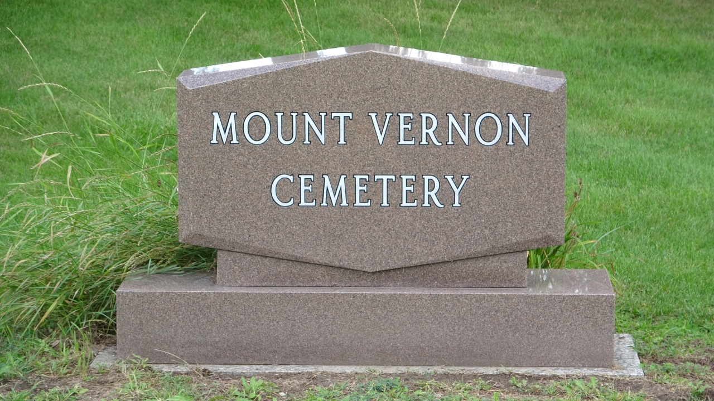

Mount Vernon Cemetery

Mount Vernon Memorial Estates is located in Lemont, Illinois, roughly twenty-seven miles southwest of Chicago. Sunnyland Slim is the only Blues musician buried here. Mount Vernon’s address is 11875 Archer Avenue, Lemont, Illinois, 60439.